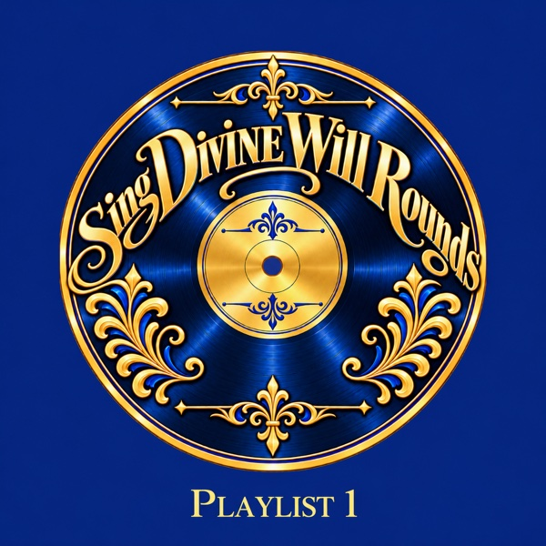
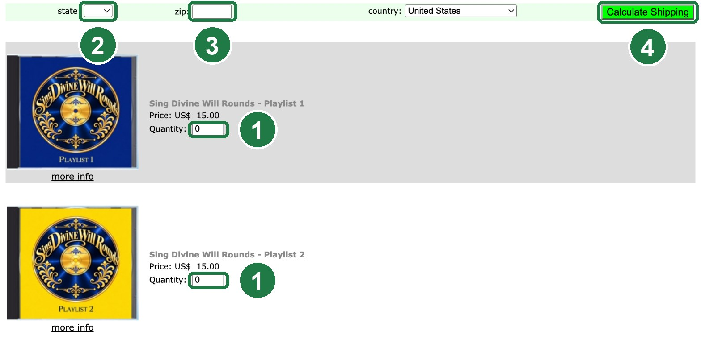

Sing Divine Will Rounds
Sung prayers to join Jesus in the Rounds of the Divine Will, inspired by the Book of Heaven of Luisa Piccarreta.

The CDs
Two albums of round songs to sing, pray, and offer with Jesus for every soul. Each CD comes in a jewel case with full-color artwork.
Both CDs are on the same order page, so you can get one or both and pay shipping once.
See the easy step-by-step directions ↓
How to Order, Step by Step
The order page is plain and a little old-fashioned, so here is exactly what to do. Your CD is printed when you order it and mailed straight to your door.

First page
- Type how many CDs you want in the Quantity box next to each CD.
- Choose your state.
- Type your zip code.
- Click the green Calculate Shipping button.
Second page
- Keep USPS First Class Mail (about $6, arrives in about a week).
- Fill in your name, address, and email.
- Click the green Check Out button and pay with PayPal or a card.
The order page opens in a new tab, so you can keep these directions open.
It works best on a computer. Questions? Email kjoysky31@gmail.com
Playlist 1
From Creation to the dance of all creation: the story of salvation, sung as rounds.
Tap the play button to hear a short 30-second sample of each song. The full songs are on the CD.
- 1In All You Have Made6:42
- 2Creation with You4:34
- 3The Innocent Acts of Adam3:33
- 4Offering the Rounds of the Patriarchs and Prophets5:04
- 5A Mother with Mary to You3:47
- 6The Acts of the Holy Family5:13
- 7All the Ordinary Things4:08
- 8In the Mystery of Your Transfiguration4:26
- 9Mine is the Crime of Love4:27
- 10Restore Your Church4:09
- 11Holy Angels Pray with me5:44
- 12Let All Creation Join the Dance5:17
Playlist 2
Songs of trust, mercy, and love: from King David and Joseph of Egypt to St. Therese and the Flame of Love.
Tap the play button to hear a short 30-second sample of each song. The full songs are on the CD.
- 1Let my Love Meet You Dancing with the Stars3:52
- 2Singing Psalm 91 with King David4:06
- 3Joseph of Egypt4:46
- 4Tear Off the Roof! A Miracle of Faith5:34
- 5Jesus Break the Chains5:52
- 6Flames of Fire5:04
- 7The Treasures of Your Son6:33
- 8The Confidence of St. Therese of Lisieux4:19
- 9One Flame of Love6:22
- 10Divine Will Attributes5:26
- 11In the Name of All, I Love You3:17

About the Songs
My name is Kristina Joy. I am an oil painter from Minnesota with a deep love for the Divine Will and the writings of the Book of Heaven by Luisa Piccarreta.
Through God’s grace, I created these songs to help myself and others pray the Rounds of the Divine Will, joining our prayers with Jesus as we long for the coming of His Kingdom on earth.
I used AI technology to help bring these songs to life. But the true power of these songs comes not from the music. It comes from you, as you immerse yourself in God’s Divine Will and pray them in your heart or with your lips. United with Jesus, your voice becomes one with His.
“I was praying, and my sweet Jesus came, placing Himself near me in order to pray together with me; even more, His intelligence was reflected in mine, and I prayed with His; His voice echoed in mine, and I prayed with His word. But who can say the boundless effects of this prayer?” Servant of God Luisa Piccarreta, Book of Heaven, Vol. 15, April 25, 1923
As you pray or sing these rounds, you become like Esther before the King’s throne, asking for mercy upon humanity.
“This creature in Our Will is the New Esther wanting to rescue her peoples. O! how Happy We are to keep her always with Us in Our Will because, through her, We feel more inclined to use Mercy, to concede Graces, to Forgive the most obstinate sinners, and to lessen the pains of the purging souls. Poor daughter! She has a thought for everyone, and a pain similar to Ours, seeing the human family swimming in Our Will without recognizing It—living in the middle of enemies in the most wretched misery.” Servant of God Luisa Piccarreta, Book of Heaven, Vol. 36, October 30, 1938
“So, you will be the voice of the heavens; and echoing from one point to another, it will make your word heard, which, resounding through the whole celestial atmosphere, will say: ‘I love, I glorify, I adore my Creator…’. You will be the voice of each star, of the sun, of the wind, of the thunder, of the sea, of plants, of mountains – of everything, repeating continuously: ‘I love, I bless, I glorify, I adore, I thank the One who created us…’.
Oh, how beautiful will be the voice of my newborn of my Will – of the little daughter of my Volition – in all things! It will render the whole Creation speaking, and Creation will be more beautiful than if I had given It the use of the word. I love you so much that I want to hear your voice in the sun – loving, adoring, glorifying. I want to hear it in the celestial spheres, in the murmuring of the sea, in the darting of the fish, in the bird that sings and warbles, in the lamb that bleats, the turtledove that moans… I want to hear you everywhere.
I would not be content if, in all created things, in which my Will has first place, I did not hear the voice of my little newborn who, rendering the whole Creation speaking, gives Me love for love, glory and adoration for each thing created by Me.”
Servant of God Luisa Piccarreta, Book of Heaven, Vol. 19, March 14, 1926
Songs written and produced by Kristina Joy, an artist from Duluth, Minnesota. Learn more about Kristina Joy